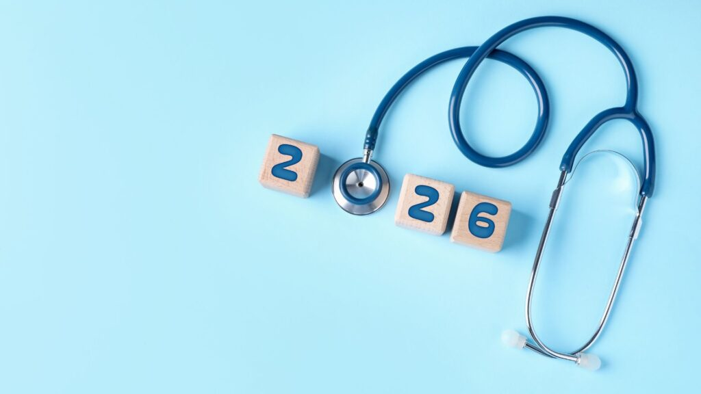

7 Tendencias de salud para 2026: lo que viene según la ciencia y la investigación internacional
-
- La salud digital deja de ser un experimento: empieza su madurez
- El éxito de la digitalización hoy se mide exclusivamente por su capacidad para generar mejores resultados en la salud de las personas.
-
- Epidemia silenciosa: metabolismo, inflamación y ultraprocesados
- El foco sanitario se desplaza de "contar calorías" a priorizar la calidad del procesamiento de los alimentos para frenar enfermedades crónicas.
-
- Salud mental integrada: del síntoma al sistema
- En 2026, la medicina entiende que no se puede sanar el cuerpo sin atender la mente, y viceversa.
-
- Medicina personalizada basada en datos reales (no solo genéticos)
- En 2026, la medicina no solo trata la enfermedad, sino que se anticipa a ella tratando al individuo en su contexto total.
-
- Neurociencia aplicada a salud y bienestar (y no solo en arquitectura)
- En 2026, la arquitectura se convierte en una herramienta terapéutica más, diseñada para potenciar la salud cognitiva desde el entorno.
-
- Envejecimiento saludable: la prioridad global
- En 2026, el éxito sanitario se redefine: el objetivo ya no es añadir años a la vida, sino añadir vida y calidad a los años.
-
- IA en salud pública: predicción, no reacción
- La ciencia ha pasado de ser descriptiva a ser predictiva. El gran hito de 2026 es que ya no solo entendemos la enfermedad, sino que tenemos la capacidad de anticiparnos a ella.
